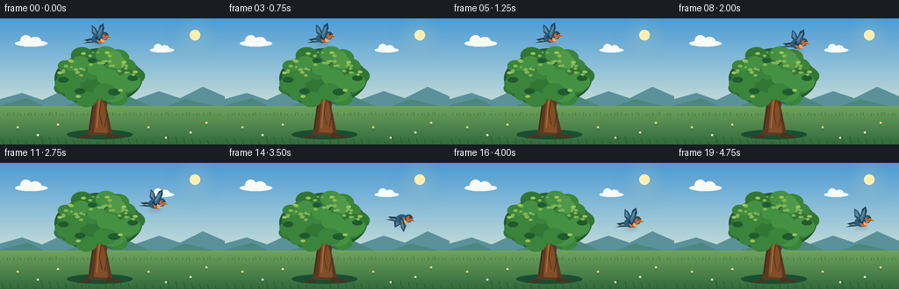
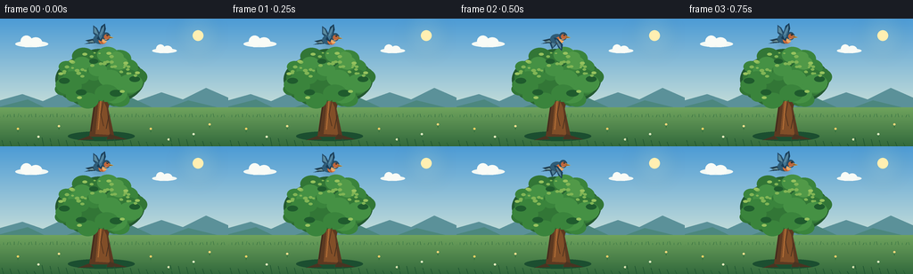

CODING AGENTS AS PIXEL WORLD MODELS
traex/GPT-5.6-Sol · dynamic_spatial_relationship_0045
点击播放 · 原生 RGB 像素
逐轮保存的候选
回放视频、检查图与代码变化。
每份候选均可单独播放。实际图片检查记录在下方工具轨迹中。
候选 01播放与检查图
点击播放 · 原生 RGB 像素


展开代码变化
--- 上一保存版本
+++ 本次保存版本
@@ -0,0 +1,252 @@
+from pathlib import Path
+import math
+import numpy as np
+from PIL import Image, ImageDraw, ImageFilter
+import artifact_io
+
+W, H, N = 256, 144, 20
+S = 4
+rng = np.random.default_rng(4501)
+
+
+def sc(v):
+ return int(round(v * S))
+
+
+def pts(seq):
+ return [(sc(x), sc(y)) for x, y in seq]
+
+
+def ellipse(draw, box, fill, outline=None, width=1):
+ draw.ellipse(tuple(sc(v) for v in box), fill=fill, outline=outline, width=sc(width) if outline else 1)
+
+
+def polygon(draw, xy, fill):
+ draw.polygon(pts(xy), fill=fill)
+
+
+def line(draw, xy, fill, width=1, joint='curve'):
+ draw.line(pts(xy), fill=fill, width=sc(width), joint=joint)
+
+
+def gradient_background():
+ im = Image.new('RGB', (W*S, H*S))
+ p = np.asarray(im).copy()
+ top = np.array([76, 155, 213], dtype=float)
+ bot = np.array([221, 235, 218], dtype=float)
+ for yy in range(H*S):
+ y = yy/(H*S-1)
+ # Slightly richer blue through the upper sky.
+ t = min(1.0, y/0.83)
+ col = top*(1-t) + bot*t
+ p[yy, :, :] = np.clip(col, 0, 255).astype(np.uint8)
+ im = Image.fromarray(p)
+ d = ImageDraw.Draw(im, 'RGBA')
+
+ # Warm sun and soft atmospheric halo, kept away from the bird's route.
+ glow = Image.new('RGBA', im.size, (0,0,0,0))
+ gd = ImageDraw.Draw(glow, 'RGBA')
+ for r, a in [(26,8),(20,10),(14,16),(8,30)]:
+ gd.ellipse((sc(222-r), sc(19-r), sc(222+r), sc(19+r)), fill=(255,238,165,a))
+ glow = glow.filter(ImageFilter.GaussianBlur(sc(7)))
+ im = Image.alpha_composite(im.convert('RGBA'), glow)
+ d = ImageDraw.Draw(im, 'RGBA')
+ ellipse(d, (216,13,228,25), (255,239,178,225))
+
+ # Thin, distant clouds with layered translucent lobes.
+ for cx, cy, size, alpha in [(35,27,1.0,105),(184,35,.75,75)]:
+ ellipse(d, (cx-18*size,cy-2*size,cx+19*size,cy+5*size), (242,248,244,alpha))
+ ellipse(d, (cx-12*size,cy-8*size,cx+1*size,cy+5*size), (249,251,246,alpha))
+ ellipse(d, (cx-2*size,cy-6*size,cx+12*size,cy+5*size), (249,251,246,alpha))
+
+ # Blue atmospheric ridges and rolling hills.
+ polygon(d, [(0,105),(0,92),(25,85),(48,93),(72,82),(99,93),(124,79),(153,93),(181,83),(205,91),(231,78),(256,89),(256,105)], (91,145,153,150))
+ polygon(d, [(0,112),(0,99),(31,91),(60,105),(89,95),(118,103),(147,89),(179,104),(211,92),(256,103),(256,112)], (76,135,126,220))
+
+ # Meadow gradient.
+ for y in range(100*S, H*S):
+ t = (y/S-100)/(H-100)
+ color = tuple(int(v) for v in (np.array([111,163,93])*(1-t)+np.array([50,105,60])*t)) + (255,)
+ d.line([(0,y),(W*S,y)], fill=color, width=1)
+
+ # Distant grasses, flowers, and grounding shadows.
+ for x in range(0, W, 4):
+ hh = 2.0 + ((x*17)%11)/5
+ col = (54,119,69,110) if x%8 else (43,100,59,145)
+ line(d, [(x,111),(x+((x%3)-1),111-hh)], col, .5)
+ ellipse(d, (76,127,151,138), (27,78,48,60))
+ for x, y, c in [(20,124,(244,211,100,210)),(43,133,(236,240,194,190)),(169,124,(246,207,104,200)),(189,136,(225,231,183,180)),(235,119,(249,216,123,195)),(217,130,(225,238,198,190)),(66,121,(248,225,143,170))]:
+ line(d, [(x,y+4),(x,y)], (48,108,58,150), .7)
+ ellipse(d, (x-1.2,y-1,x+1.2,y+1.2), c)
+ return im
+
+
+BASE = gradient_background()
+
+# Fixed leaf positions make the tree a stable spatial reference.
+leaf_specs = []
+for _ in range(54):
+ ang = rng.uniform(0, 2*math.pi)
+ rad = math.sqrt(rng.uniform())
+ x = 111 + math.cos(ang)*rad*47
+ y = 67 + math.sin(ang)*rad*28
+ # crop to a gently domed canopy
+ if y < 40: y = 40 + rng.uniform(0,5)
+ r = rng.uniform(7.0, 13.0)
+ leaf_specs.append((x,y,r,rng.random()))
+
+# tiny highlight leaves around upper and lit edges
+highlight_specs = []
+for _ in range(32):
+ ang = rng.uniform(math.pi*0.9, math.pi*2.0)
+ x = 111 + math.cos(ang)*rng.uniform(16,43)
+ y = 65 + math.sin(ang)*rng.uniform(12,27)
+ highlight_specs.append((x,y,rng.uniform(1.2,2.7)))
+
+
+def draw_tree(im):
+ d = ImageDraw.Draw(im, 'RGBA')
+ # Behind-canopy shadow gives the crown a single readable silhouette.
+ ellipse(d, (62,39,162,98), (36,89,48,255))
+ ellipse(d, (78,34,145,99), (38,96,48,255))
+
+ # Main trunk, roots, and branching structure.
+ polygon(d, [(100,133),(106,91),(108,66),(116,64),(119,91),(128,133)], (92,57,33,255))
+ polygon(d, [(107,130),(111,88),(113,67),(119,67),(119,98),(123,131)], (129,78,40,255))
+ polygon(d, [(116,93),(122,69),(143,52),(146,54),(126,76),(121,103)], (91,56,31,255))
+ polygon(d, [(109,82),(96,59),(80,50),(79,54),(100,66),(111,95)], (86,54,32,255))
+ polygon(d, [(112,72),(111,47),(115,44),(117,72)], (105,63,34,255))
+ polygon(d, [(100,132),(87,137),(105,136)], (72,52,34,230))
+ polygon(d, [(123,130),(142,136),(119,136)], (72,52,34,230))
+ line(d, [(110,125),(113,91),(115,72)], (178,110,54,135), 1.3)
+ line(d, [(102,127),(106,98)], (54,40,28,110), 1)
+
+ # Foliage from deep shade to sunlit green.
+ ordered = sorted(leaf_specs, key=lambda z: z[3])
+ palette = [(43,103,49,255),(50,118,54,255),(58,132,60,255),(69,145,68,255),(81,153,72,255)]
+ for x,y,r,k in ordered:
+ # upper/right foliage catches more light
+ light = max(0, min(4, int(k*3 + (1 if y<62 else 0) + (1 if x>120 else 0))))
+ col = palette[light]
+ ellipse(d, (x-r*1.1,y-r*.82,x+r*1.1,y+r*.82), col)
+
+ # Add selected dark pockets and small luminous leaves for visual depth.
+ for x,y,r in [(72,70,6),(91,83,6),(130,84,7),(151,68,6),(105,48,5)]:
+ ellipse(d, (x-r,y-r*.55,x+r,y+r*.55), (31,91,45,100))
+ for x,y,r in highlight_specs:
+ ellipse(d, (x-r,y-r*.65,x+r,y+r*.65), (129,181,85,135))
+ for x,y in [(80,48),(95,40),(122,39),(141,50),(154,61),(68,62),(137,82),(89,89)]:
+ ellipse(d, (x-2.8,y-1.4,x+2.8,y+1.4), (151,194,94,145))
+
+ # Bark fissures in front.
+ line(d, [(116,92),(113,108),(116,121)], (72,45,29,150), .75)
+ line(d, [(122,109),(119,124)], (62,43,29,130), .65)
+
+
+def bird_position(i):
+ # A readable temporal structure: hover above, travel, then remain to the right.
+ if i <= 4:
+ return 111.5 + 0.7*math.sin(i*1.25), 21.5 + 0.7*math.sin(i*1.8), 0.0
+ if i <= 15:
+ t = (i-4)/11.0
+ e = t*t*(3-2*t)
+ x = 112 + (204-112)*e
+ y = 22 + (66-22)*e - 8.5*math.sin(math.pi*t)
+ # nose angle follows the curved route, restrained for legibility
+ dxdt = (204-112)*6*t*(1-t)
+ dydt = (66-22)*6*t*(1-t) - 8.5*math.pi*math.cos(math.pi*t)
+ angle = math.degrees(math.atan2(dydt, max(1,dxdt)))*0.35
+ return x, y, angle
+ j = i-15
+ return 204 + 2.1*j, 66 + 0.8*math.sin(j*1.5), 2.0*math.sin(j)
+
+
+def draw_bird(im, cx, cy, angle_deg, frame):
+ """Draw a detailed right-facing blue-and-russet bird with animated wings."""
+ d = ImageDraw.Draw(im, 'RGBA')
+ a = math.radians(angle_deg)
+ ca, sa = math.cos(a), math.sin(a)
+ def tr(x,y):
+ return (cx + x*ca-y*sa, cy + x*sa+y*ca)
+ def poly(local, fill):
+ polygon(d, [tr(x,y) for x,y in local], fill)
+ def ell_local(box, fill, outline=None, width=1):
+ # Render an ellipse on a compact transparent layer, then rotate for route angle.
+ x0,y0,x1,y1=box
+ # At this resolution route rotation barely affects ellipses; center transform is sufficient.
+ mx,my=tr((x0+x1)/2,(y0+y1)/2)
+ rx=(x1-x0)/2; ry=(y1-y0)/2
+ ellipse(d,(mx-rx,my-ry,mx+rx,my+ry),fill,outline,width)
+
+ # Soft moving shadow beneath bird helps separation without indicating another object.
+ shadow = Image.new('RGBA', im.size, (0,0,0,0))
+ sd = ImageDraw.Draw(shadow, 'RGBA')
+ ellipse(sd, (cx-8,cy+7,cx+8,cy+10), (25,54,66,45))
+ shadow = shadow.filter(ImageFilter.GaussianBlur(sc(2)))
+ im.alpha_composite(shadow)
+ d = ImageDraw.Draw(im, 'RGBA')
+
+ phase = frame*2.45 + .35
+ flap = math.sin(phase)
+ # Far wing first. Wings switch between a high uplift and broad downstroke.
+ if flap >= 0:
+ poly([(-2,0),(-7,-5),(-7,-14),(-3,-11),(2,-2),(4,2)], (36,75,105,255))
+ poly([(-6,-6),(-6,-12),(-4,-10),(-1,-3)], (91,139,160,210))
+ else:
+ poly([(-3,-1),(-8,5),(-5,13),(-1,9),(4,2)], (31,68,96,255))
+ poly([(-6,5),(-4,11),(-1,7),(2,1)], (82,128,150,210))
+
+ # Forked tail and warm underside.
+ poly([(-7,1),(-16,3),(-11,5),(-17,7),(-5,6),(-1,3)], (31,61,79,255))
+ poly([(-8,3),(-14,5),(-6,5)], (112,149,155,180))
+ ell_local((-7,-4,8,7), (47,92,119,255))
+ ell_local((-1,-1,8,7), (207,111,63,255))
+ ell_local((3,0,8,5.7), (236,171,105,220))
+
+ # Near wing: dark rim and blue inner vanes.
+ if flap >= 0:
+ poly([(-3,1),(-1,-3),(2,-13),(6,-16),(7,-10),(4,-1),(2,4)], (24,59,86,255))
+ poly([(-1,-2),(2,-10),(5,-14),(5,-8),(3,-1),(1,2)], (65,117,148,255))
+ line(d, [tr(1,-3),tr(5,-12)], (137,174,183,150), .55)
+ else:
+ poly([(-3,0),(1,1),(7,8),(6,15),(2,11),(-1,4)], (25,61,88,255))
+ poly([(0,2),(5,8),(5,13),(2,9),(-1,3)], (66,116,145,255))
+ line(d, [tr(1,4),tr(5,12)], (139,174,181,145), .55)
+
+ # Head, face patch, beak, and crisp eye.
+ ell_local((3,-6,12,3), (40,79,104,255))
+ ell_local((5,-4,11,2), (191,103,61,235))
+ poly([(11,-2),(16,0),(11,1)], (224,166,69,255))
+ poly([(11,-1),(15,0),(11,0)], (91,66,35,255))
+ ex,ey=tr(8.8,-3.0)
+ ellipse(d,(ex-1.05,ey-1.05,ex+1.05,ey+1.05),(15,22,24,255))
+ ellipse(d,(ex-.45,ey-.55,ex+.2,ey+.1),(246,250,236,255))
+ # A tiny pale throat edge and feet tucked in flight.
+ line(d,[tr(5,2.3),tr(8,1.8)],(247,203,141,170),.65)
+ line(d,[tr(-1,5),tr(1,7)],(83,58,38,220),.6)
+ line(d,[tr(2,5),tr(3,7)],(83,58,38,220),.6)
+
+
+def make_frame(i):
+ im = BASE.copy()
+ draw_tree(im)
+ cx,cy,ang = bird_position(i)
+ draw_bird(im,cx,cy,ang,i)
+
+ # Fine foreground blades add finish while remaining static across time.
+ d = ImageDraw.Draw(im, 'RGBA')
+ for x in range(4, W, 9):
+ h = 3 + ((x*7)%8)
+ bend = ((x*5)%5)-2
+ line(d, [(x,H),(x+bend,H-h)], (31,85,49,170), .7)
+ if x%27==4:
+ line(d, [(x,H-3),(x-3,H-h+2)], (53,112,60,150), .55)
+ return np.asarray(im.convert('RGB').resize((W,H),Image.Resampling.LANCZOS), dtype=np.uint8)
+
+
+def main():
+ frames = np.stack([make_frame(i) for i in range(N)], axis=0)
+ artifact_io.save(frames, Path(__file__).resolve().parent)
+
+if __name__ == '__main__':
+ main()
可观测工具轨迹
实际执行的命令与返回图片。
命令 1exit 0
/bin/bash -lc "ls -la && printf '\\n--- prompt.txt ---\\n' && cat prompt.txt && printf '\\n--- GENERATION_RULES.md ---\\n' && cat GENERATION_RULES.md && printf '\\n--- task_spec.json ---\\n' && cat task_spec.json"
命令 2exit 0
/bin/bash -lc "find . -maxdepth 2 -type f -printf '%p\\n' | sort"
命令 3exit 0
/bin/bash -lc "sed -n '1,260p' artifact_io.py"
命令 4exit 0
/bin/bash -lc "cat > generate.py <<'PY'
from pathlib import Path
import math
import numpy as np
from PIL import Image, ImageDraw, ImageFilter
import artifact_io
W, H, N = 256, 144, 20
S = 4
rng = np.random.default_rng(4501)
def sc(v):
return int(round(v * S))
def pts(seq):
return [(sc(x), sc(y)) for x, y in seq]
def ellipse(draw, box, fill, outline=None, width=1):
draw.ellipse(tuple(sc(v) for v in box), fill=fill, outline=outline, width=sc(width) if outline else 1)
def polygon(draw, xy, fill):
draw.polygon(pts(xy), fill=fill)
def line(draw, xy, fill, width=1, joint='curve'):
draw.line(pts(xy), fill=fill, width=sc(width), joint=joint)
def gradient_background():
im = Image.new('RGB', (W*S, H*S))
p = np.asarray(im).copy()
top = np.array([76, 155, 213], dtype=float)
bot = np.array([221, 235, 218], dtype=float)
for yy in range(H*S):
y = yy/(H*S-1)
# Slightly richer blue through the upper sky.
t = min(1.0, y/0.83)
col = top*(1-t) + bot*t
p[yy, :, :] = np.clip(col, 0, 255).astype(np.uint8)
im = Image.fromarray(p)
d = ImageDraw.Draw(im, 'RGBA')
# Warm sun and soft atmospheric halo, kept away from the bird's route.
glow = Image.new('RGBA', im.size, (0,0,0,0))
gd = ImageDraw.Draw(glow, 'RGBA')
for r, a in [(26,8),(20,10),(14,16),(8,30)]:
gd.ellipse((sc(222-r), sc(19-r), sc(222+r), sc(19+r)), fill=(255,238,165,a))
glow = glow.filter(ImageFilter.GaussianBlur(sc(7)))
im = Image.alpha_composite(im.convert('RGBA'), glow)
d = ImageDraw.Draw(im, 'RGBA')
ellipse(d, (216,13,228,25), (255,239,178,225))
# Thin, distant clouds with layered translucent lobes.
for cx, cy, size, alpha in [(35,27,1.0,105),(184,35,.75,75)]:
ellipse(d, (cx-18*size,cy-2*size,cx+19*size,cy+5*size), (242,248,244,alpha))
ellipse(d, (cx-12*size,cy-8*size,cx+1*size,cy+5*size), (249,251,246,alpha))
ellipse(d, (cx-2*size,cy-6*size,cx+12*size,cy+5*size), (249,251,246,alpha))
# Blue atmospheric ridges and rolling hills.
polygon(d, [(0,105),(0,92),(25,85),(48,93),(72,82),(99,93),(124,79),(153,93),(181,83),(205,91),(231,78),(256,89),(256,105)], (91,145,153,150))
polygon(d, [(0,112),(0,99),(31,91),(60,105),(89,95),(118,103),(147,89),(179,104),(211,92),(256,103),(256,112)], (76,135,126,220))
# Meadow gradient.
for y in range(100*S, H*S):
t = (y/S-100)/(H-100)
color = tuple(int(v) for v in (np.array([111,163,93])*(1-t)+np.array([50,105,60])*t)) + (255,)
d.line([(0,y),(W*S,y)], fill=color, width=1)
# Distant grasses, flowers, and grounding shadows.
for x in range(0, W, 4):
hh = 2.0 + ((x*17)%11)/5
col = (54,119,69,110) if x%8 else (43,100,59,145)
line(d, [(x,111),(x+((x%3)-1),111-hh)], col, .5)
ellipse(d, (76,127,151,138), (27,78,48,60))
for x, y, c in [(20,124,(244,211,100,210)),(43,133,(236,240,194,190)),(169,124,(246,207,104,200)),(189,136,(225,231,183,180)),(235,119,(249,216,123,195)),(217,130,(225,238,198,190)),(66,121,(248,225,143,170))]:
line(d, [(x,y+4),(x,y)], (48,108,58,150), .7)
ellipse(d, (x-1.2,y-1,x+1.2,y+1.2), c)
return im
BASE = gradient_background()
# Fixed leaf positions make the tree a stable spatial reference.
leaf_specs = []
for _ in range(54):
ang = rng.uniform(0, 2*math.pi)
rad = math.sqrt(rng.uniform())
x = 111 + math.cos(ang)*rad*47
y = 67 + math.sin(ang)*rad*28
# crop to a gently domed canopy
if y < 40: y = 40 + rng.uniform(0,5)
r = rng.uniform(7.0, 13.0)
leaf_specs.append((x,y,r,rng.random()))
# tiny highlight leaves around upper and lit edges
highlight_specs = []
for _ in range(32):
ang = rng.uniform(math.pi*0.9, math.pi*2.0)
x = 111 + math.cos(ang)*rng.uniform(16,43)
y = 65 + math.sin(ang)*rng.uniform(12,27)
highlight_specs.append((x,y,rng.uniform(1.2,2.7)))
def draw_tree(im):
d = ImageDraw.Draw(im, 'RGBA')
# Behind-canopy shadow gives the crown a single readable silhouette.
ellipse(d, (62,39,162,98), (36,89,48,255))
ellipse(d, (78,34,145,99), (38,96,48,255))
# Main trunk, roots, and branching structure.
polygon(d, [(100,133),(106,91),(108,66),(116,64),(119,91),(128,133)], (92,57,33,255))
polygon(d, [(107,130),(111,88),(113,67),(119,67),(119,98),(123,131)], (129,78,40,255))
polygon(d, [(116,93),(122,69),(143,52),(146,54),(126,76),(121,103)], (91,56,31,255))
polygon(d, [(109,82),(96,59),(80,50),(79,54),(100,66),(111,95)], (86,54,32,255))
polygon(d, [(112,72),(111,47),(115,44),(117,72)], (105,63,34,255))
polygon(d, [(100,132),(87,137),(105,136)], (72,52,34,230))
polygon(d, [(123,130),(142,136),(119,136)], (72,52,34,230))
line(d, [(110,125),(113,91),(115,72)], (178,110,54,135), 1.3)
line(d, [(102,127),(106,98)], (54,40,28,110), 1)
# Foliage from deep shade to sunlit green.
ordered = sorted(leaf_specs, key=lambda z: z[3])
palette = [(43,103,49,255),(50,118,54,255),(58,132,60,255),(69,145,68,255),(81,153,72,255)]
for x,y,r,k in ordered:
# upper/right foliage catches more light
light = max(0, min(4, int(k*3 + (1 if y<62 else 0) + (1 if x>120 else 0))))
col = palette[light]
ellipse(d, (x-r*1.1,y-r*.82,x+r*1.1,y+r*.82), col)
# Add selected dark pockets and small luminous leaves for visual depth.
for x,y,r in [(72,70,6),(91,83,6),(130,84,7),(151,68,6),(105,48,5)]:
ellipse(d, (x-r,y-r*.55,x+r,y+r*.55), (31,91,45,100))
for x,y,r in highlight_specs:
ellipse(d, (x-r,y-r*.65,x+r,y+r*.65), (129,181,85,135))
for x,y in [(80,48),(95,40),(122,39),(141,50),(154,61),(68,62),(137,82),(89,89)]:
ellipse(d, (x-2.8,y-1.4,x+2.8,y+1.4), (151,194,94,145))
# Bark fissures in front.
line(d, [(116,92),(113,108),(116,121)], (72,45,29,150), .75)
line(d, [(122,109),(119,124)], (62,43,29,130), .65)
def bird_position(i):
# A readable temporal structure: hover above, travel, then remain to the right.
if i <= 4:
return 111.5 + 0.7*math.sin(i*1.25), 21.5 + 0.7*math.sin(i*1.8), 0.0
if i <= 15:
t = (i-4)/11.0
e = t*t*(3-2*t)
x = 112 + (204-112)*e
y = 22 + (66-22)*e - 8.5*math.sin(math.pi*t)
# nose angle follows the curved route, restrained for legibility
dxdt = (204-112)*6*t*(1-t)
dydt = (66-22)*6*t*(1-t) - 8.5*math.pi*math.cos(math.pi*t)
angle = math.degrees(math.atan2(dydt, max(1,dxdt)))*0.35
return x, y, angle
j = i-15
return 204 + 2.1*j, 66 + 0.8*math.sin(j*1.5), 2.0*math.sin(j)
def draw_bird(im, cx, cy, angle_deg, frame):
\"\"\"Draw a detailed right-facing blue-and-russet bird with animated wings.\"\"\"
d = ImageDraw.Draw(im, 'RGBA')
a = math.radians(angle_deg)
ca, sa = math.cos(a), math.sin(a)
def tr(x,y):
return (cx + x*ca-y*sa, cy + x*sa+y*ca)
def poly(local, fill):
polygon(d, [tr(x,y) for x,y in local], fill)
def ell_local(box, fill, outline=None, width=1):
# Render an ellipse on a compact transparent layer, then rotate for route angle.
x0,y0,x1,y1=box
# At this resolution route rotation barely affects ellipses; center transform is sufficient.
mx,my=tr((x0+x1)/2,(y0+y1)/2)
rx=(x1-x0)/2; ry=(y1-y0)/2
ellipse(d,(mx-rx,my-ry,mx+rx,my+ry),fill,outline,width)
# Soft moving shadow beneath bird helps separation without indicating another object.
shadow = Image.new('RGBA', im.size, (0,0,0,0))
sd = ImageDraw.Draw(shadow, 'RGBA')
ellipse(sd, (cx-8,cy+7,cx+8,cy+10), (25,54,66,45))
shadow = shadow.filter(ImageFilter.GaussianBlur(sc(2)))
im.alpha_composite(shadow)
d = ImageDraw.Draw(im, 'RGBA')
phase = frame*2.45 + .35
flap = math.sin(phase)
# Far wing first. Wings switch between a high uplift and broad downstroke.
if flap >= 0:
poly([(-2,0),(-7,-5),(-7,-14),(-3,-11),(2,-2),(4,2)], (36,75,105,255))
poly([(-6,-6),(-6,-12),(-4,-10),(-1,-3)], (91,139,160,210))
else:
poly([(-3,-1),(-8,5),(-5,13),(-1,9),(4,2)], (31,68,96,255))
poly([(-6,5),(-4,11),(-1,7),(2,1)], (82,128,150,210))
# Forked tail and warm underside.
poly([(-7,1),(-16,3),(-11,5),(-17,7),(-5,6),(-1,3)], (31,61,79,255))
poly([(-8,3),(-14,5),(-6,5)], (112,149,155,180))
ell_local((-7,-4,8,7), (47,92,119,255))
ell_local((-1,-1,8,7), (207,111,63,255))
ell_local((3,0,8,5.7), (236,171,105,220))
# Near wing: dark rim and blue inner vanes.
if flap >= 0:
poly([(-3,1),(-1,-3),(2,-13),(6,-16),(7,-10),(4,-1),(2,4)], (24,59,86,255))
poly([(-1,-2),(2,-10),(5,-14),(5,-8),(3,-1),(1,2)], (65,117,148,255))
line(d, [tr(1,-3),tr(5,-12)], (137,174,183,150), .55)
else:
poly([(-3,0),(1,1),(7,8),(6,15),(2,11),(-1,4)], (25,61,88,255))
poly([(0,2),(5,8),(5,13),(2,9),(-1,3)], (66,116,145,255))
line(d, [tr(1,4),tr(5,12)], (139,174,181,145), .55)
# Head, face patch, beak, and crisp eye.
ell_local((3,-6,12,3), (40,79,104,255))
ell_local((5,-4,11,2), (191,103,61,235))
poly([(11,-2),(16,0),(11,1)], (224,166,69,255))
poly([(11,-1),(15,0),(11,0)], (91,66,35,255))
ex,ey=tr(8.8,-3.0)
ellipse(d,(ex-1.05,ey-1.05,ex+1.05,ey+1.05),(15,22,24,255))
ellipse(d,(ex-.45,ey-.55,ex+.2,ey+.1),(246,250,236,255))
# A tiny pale throat edge and feet tucked in flight.
line(d,[tr(5,2.3),tr(8,1.8)],(247,203,141,170),.65)
line(d,[tr(-1,5),tr(1,7)],(83,58,38,220),.6)
line(d,[tr(2,5),tr(3,7)],(83,58,38,220),.6)
def make_frame(i):
im = BASE.copy()
draw_tree(im)
cx,cy,ang = bird_position(i)
draw_bird(im,cx,cy,ang,i)
# Fine foreground blades add finish while remaining static across time.
d = ImageDraw.Draw(im, 'RGBA')
for x in range(4, W, 9):
h = 3 + ((x*7)%8)
bend = ((x*5)%5)-2
line(d, [(x,H),(x+bend,H-h)], (31,85,49,170), .7)
if x%27==4:
line(d, [(x,H-3),(x-3,H-h+2)], (53,112,60,150), .55)
return np.asarray(im.convert('RGB').resize((W,H),Image.Resampling.LANCZOS), dtype=np.uint8)
def main():
frames = np.stack([make_frame(i) for i in range(N)], axis=0)
artifact_io.save(frames, Path(__file__).resolve().parent)
if __name__ == '__main__':
main()
PY
python generate.py
ls -lh pixels.npz inspection.png index.html frames/00.png frames/19.png"命令 5exit 0
/bin/bash -lc "python - <<'PY'
import numpy as np
from PIL import Image
x=np.load('pixels.npz')['pixels']
print(x.shape,x.dtype,hex(int(x.min())),hex(int(x.max())))
for i in [0,4,5,8,12,15,19]:
im=np.array(Image.open(f'frames/{i:02d}.png'))
print(i, im.shape, im.dtype, im.mean(axis=(0,1)).round(2))
PY"视觉工具实际返回图片 1

保存候选 1 份；完成命令 5 次；可验证图片返回 1 张。原始 API 响应与完整日志保留在本地。